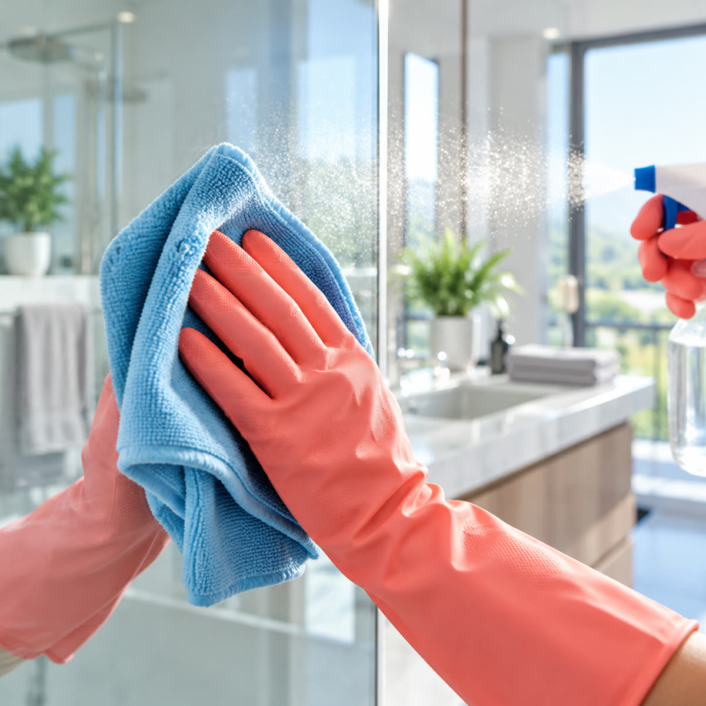

Диваны и кресла
Пылесбор, обработка составом, чистка щёткой и экстрактором, сушка. Убираем засаленность подлокотников и подголовников.
Ткань диктует состав. Поэтому перед работой смотрим материал и пробуем на незаметном участке.
Пылесбор, обработка составом, чистка щёткой и экстрактором, сушка. Убираем засаленность подлокотников и подголовников.

Обработка с двух сторон, работа с биологическими следами и запахами. Стулья — включая мягкие офисные.

Глубокая чистка ворса, пятна от еды и следы животных. Крупные ковры — на месте, по согласованию с вывозом.
По фото проще понять, с чем работаем. Точную стоимость назовём после осмотра.